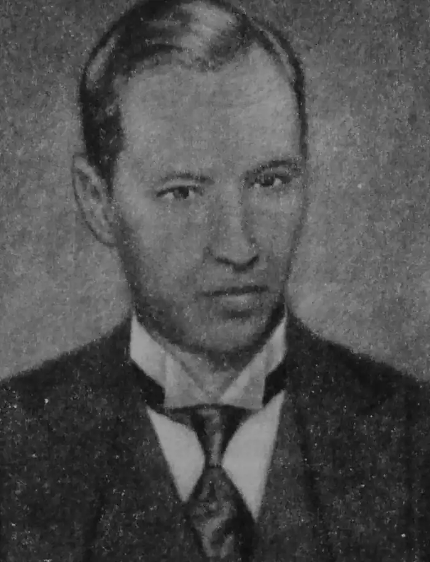

СПИРИДОН ФЕДОСІЙОВИЧ ЧЕРКАСЕНКО
1876 (24.12) — 1940 (7.02)
Ім'я Спиридона Феодосійовича Черкасенка, творчість якого пов'язана з нашим краєм, на десятки років випало з історії літературного процесу в Україні: його було зараховано, як і багатьох інших відомих письменників, до ворожого стану, до людей, які, за висловлюваннями радянських істориків літератури: "...зустріли Лютневу революцію під гаслами національного визволення, але Жовтневої революції не прийняли і опинилися в націоналістичному, антинародному таборі, а згодом—в еміграції" (Історія української літератури у 8 томах: Т. 6). Та чи такої оцінки насправді заслуговує цей письменник? Сьогоднішні оновлюючі суспільні процеси в Україні радикально змінили ставлення до письменника-земляка. І промовистим свідченням цьому є видання 1990 року його вибраних творів у 2-х томах. Спиридон Федосійович Черкасенко народився 24 грудня 1876 року в містечку Новий Буг на Миколаївщині у селянській родині. Після закінчення учительської семінарії з 1895 року вчителював, зокрема на Лідіївських рудниках (сучасний Кіровський район міста Донецька). Тут Черкасенко познайомився з важкою працею шахтарів та їхньою боротьбою за економічні і політичні права, з життям інтелігенції. Перебуваючи на Донбасі, С. Черкасенко активно включився в літературний процес, виступаючи спочатку з віршами, а потім з оповіданнями і драматичними творами в українських журналах "Літературно-науковий вісник", "Нова громада", "Дзвін", в альманах "Перша ластівка", "В неволі", "Терновий вінок". З 1910 оку письменник переїздить до Києва, працює в газеті "Рада", а пізніше — в журналі "Дзвін". Творив письменник і в публіцистичному жанрі, друкуючи протягом 1912—1913 років у "Літературно-науковому віснику" свої статті.. На сторінках цього часопису вів публіцистичний розділ "З українського життя", в якому подавав численні факти соціального і національного антагонізму в тодішньому суспільстві. 1919 року поет виїздить до Австрії іЧехословаччини вивчати стан народної освіти і замовляти для української школи підручники. На Батьківщину він більше не повернувся. Деякий час працював в Ужгороді в місцевому театрі разом з Миколою Садовським. 1932 року за активне співробітництво з українською діаспорою Черкасенко змушений був під тиском влади покинути місто над Ужем і виїхати до Праги. За кордоном поет продовжував літературну діяльність, видавши протягом 1919—1921 років три томи "Творів". У кінці 20-х років він написав кілька драматичних речей: віршовану трагедію "Коли народ мовчить" та історичну драму "Северин Наливайко", яка мала стати першою частиною задуманої; трилогії "Степ". С. Черкасенко був автором роману у віршах "Еспанський кабальєро Дон Хуан і Розіта", близьким до сюжету, використаним Лесею Українкою у "Кам'яному господарі". Слід відзначити, що відразу після революційних подій в Україні творчість С. Черкасенка не оцінювалась як ворожа. У трудових школах діти вчились за складеною ним читанкою. А такі пісні на поезії С. Черкасенка, як "Тихо над річкою" і "Ой, чого ти, дубе" не сходили з репертуарів українських співаків та хорових капел. Помер поет у Празі 7 лютого 1940 року, його поховали на Ольшанах, передмісті Праги. Поруч нього — могили відомих культурних діячів і поетів-емігрантів, зокрема, О. Олеся, С. Русової, В. Немировича-Данченка. Помітне місце у творчості періоду перебування на Донбасі займала тема шахтарської праці. Тут, на Лідіївці, С. Черкасенко працював вчителем у школі. Тут він познайомився з робітниками, праця яких була надзвичайно небезпечна і важка. У цей час шахтарі вели важку боротьбу за поліпшення умов свого життя. На заводах і шахтах виникали революційні підпільні організації. Щоб краще уявити суспільно-політичну обстановку в краї, звернемось до історичних свідчень. Заселення земель, що входять до сучасного Донецька, почалося давно, коли у верхів'ях річки Кальміусу, на її обох берегах, осідали зимівниками і хуторами козаки-запорожці. Після знищення російським царатом Запорізької Січі силою влади у козаків відбирались земельні угіддя і "жалувались" російським офіцерським чинам та "благонадійній" частині козацької старшини. Жителі навколишніх сіл займались переважно землеробством і скотарством. Після 1820 року, коли в Олександрівці (район теперішнього м. Донецька) було відкрито поклади кам'яного вугілля, стали з'явились дрібні шахти. Після скасування кріпосного права почав створюватись новий промисловий район. У другій половині XIX століття у зв'язку з поразками Росії у Кримській війні і неможливістю покриття витрат власною казною на концесійних началах було допущено російським урядом іноземний капітал. І сюди полинув потік французьких, бельгійських, англійських і німецьких підприємців. У 1892 році на землях поміщиці Горбачової з'являється невелика шахта, яка була названа ім'ям дочки засновника цієї шахти бельгійця О. Шена — "Лідія". Сюди під кінець XIX ст. і прибув на вчителювання молодий Спиридон Черкасенко. Якою ж була громадсько-політична обстановка в Юзівці на той час? В "Історії міст і сіл Української РСР: Донецька область" про це говориться: "Наприкінці 1897 року організовано виступили металурги Юзівки, вимагаючи скорочення 12-годинного робочого дня. З першого січня 1898 року вони припинили роботу о 6-й годині вечора замість 7-ї, як було доти. Незважаючи на погрози адміністрації, у визначений час першими вийшли на заводське подвір'я робітники механічного цеху. До них приєднались доменщики, сталевари, прокатники. Маса людей прорвалась на вулицю крізь поліцейський кордон. Управитель заводу змушений був оголосити, що з лютого 1898 року запроваджується 10,5-годинний робочий день". Заворушення відбувались тоді на багатьох шахтах. Зокрема, на Лідіївському руднику (так називалась шахта "Лідіївка") виникали революційні гуртки. У музеї шахти зберігається копія одного документу початку XX століття, який прояснює політичну ситуацію в цьому районі Юзівки. Це донесення помічника начальника жандармського управління якогось Камінського про революційне звернення "До робітників", яке розповсюджувалось гірником шахти "Лідіївка".У доносі писалось: "Пристав 3-го стана Бахмутского уезда за № 39 препроводил мне переписку. из которой усматривается, что из Лидиевского рудника были посланы несколько писем в различные места Могилевской губернии, причем в каждом конверте было вложено печатное преступное воззвание "К рабочим". Произведенным негласным расследованием добыты указания, что письма эти били отправлены рабочим угольного рудника Алексеем Мелешенковым. Вследствие изложенного возбуждено мною дознание. в порядке 1035 ст. Уст. Угол. Судопр., по обвинению крестьянина Алексея Мелешенкова в преступлении, предусмотренном 129 ст. Угод. Улож., о чем доношу Вашему Высокоблагородию с представлением копии Лит. А., доставленного в Департамент Полиции по этому делу. Ротмистр Каминский". Таким чином, поет потрапив у вир класових суперечностей, що тоді охопили Донбас. Його спілкування з робітниками, роздуми про їхню долю наповнювали твори письменника. Проникливість С. Черкасенка в історичне тло тодішнього суспільства відзначали літературознавці. Один з них, С. Єфремов, писав: "Його оповідання (Черкасенка — О. В.) обіймають переважно одну сферу, — шахтарського життя і показують, що те життя він знає добре і вміє вибрати з нього типові постаті...". А сучасний критик О. Бабишкін відзначив наступність творчості Черкасенка в українській літературі: "...після оповідань Б. Грінченка й поезій М. Чернявського це перше повне й вагоме відтворення умов праці, душевного стану донецького шахтаря в українській літературі". Тож давайте ознайомимося з творами С. Черкасенка про шахтарську працю, про життя у нашому краї на зламі століть. З почуттям внутрішньої напруги і співчуттям до важкої підземної праці у вірші "Шахтарі" він писав: Тихо у вогкій пітьмі В шахті, на дні. Стіни ридають німі, Мокрі, брудні. Буйними краплями піт Очі сліпить, Лампи смердючої гніт Блима, чадить. В поезії "У шахті" поет так передавав внутрішній стан гірника в умовах виснажливої праці під землею: Мокро і темно, немов в домовині. Випало кайло із рук. Дихати важко, ломота у спині. В голову болісний стук... Чому став? Не дрімай! Бери кайло — Довбай! Думка єдина: спочити хвилину — Сили нема довбонуть. Добре б піднятись та випростать спину. Свіжим повітрям дихнуть... Підземна праця, яка часто ставала причиною смерті шахтарів, викликала в поета важкі асоціації: Замість зірок золотих Ночей і вроди, і принади. В кутках далеких і страшних Убогі блимають лампади — Неначе шабаш свій мерці Сюди збирались святкувати, свої смердючі каганці Де-де забули поховати... ("Під землею") Гнітючий настрій, що супроводжує постійно працю шахтаря, вимагав якоїсь розради, забуття... Тому часто вуглекопи вдавались до горілки, щоб хоч на хвилинку забути свою важку долю. У вірші "Монолог" поет розкриває картину важкого сп'яніння шахтаря, його прагнення втекти від дійсності. Устами вуглекопа автор проголошує: Горить, болить душа моя, І серце все в огні. В горілці горе утопить — Нікому то не гріх... Та не лише відчуття розпуки полонить душу шахтаря. Він підсвідомо здогадується, що існуючому становищу повинен прийти край. Як вийде з голови Колись той хміль, то навісні — Заплачете і ви! — кидає гірник в очі своїм визискувачам. Як свідок могутніх шахтарських рухів С. Черкасенко розумів і підтримував прагнення робітництва до кращого життя, до свободи. У вірші "В царстві ночі" він так виразив ці ідеї: Та в душі, з віків знебулій, Ще ясніш горять огні. І не зникли в млі минулій Волі жданої пісні. Виростають вільні крила... Хто ж стримає нашу міць, Коли в мури вільна сила Вдарить громом блискавиць?! До теми шахтарської праці звертався поет і коли вже перебував за межами України. В далекому закордонні, переосмислюючи свою участь в шахтарському русі в Україні, він згадував: Я з вами жив... На все життя В моїй душі лишився спомин, І в бурях шарпані чуття Ще бережуть живий відгомін Колись пломінного буття. Поет звертається подумки до шахтарів, своїх колишніх друзів, він хоче знати, чи здобули вони жадану свободу, за яку боролись протягом багатьох років: Де ви тепер, мої брати, Спрацьовані понурі друзі? Чи ви знайшли кудою йти В туманах марева ілюзій До пожаданої мети? Зміст цього твору не втрачає своєї актуальності і сьогодні, бо боротьба шахтарів за кращу долю не припиняється й досі.